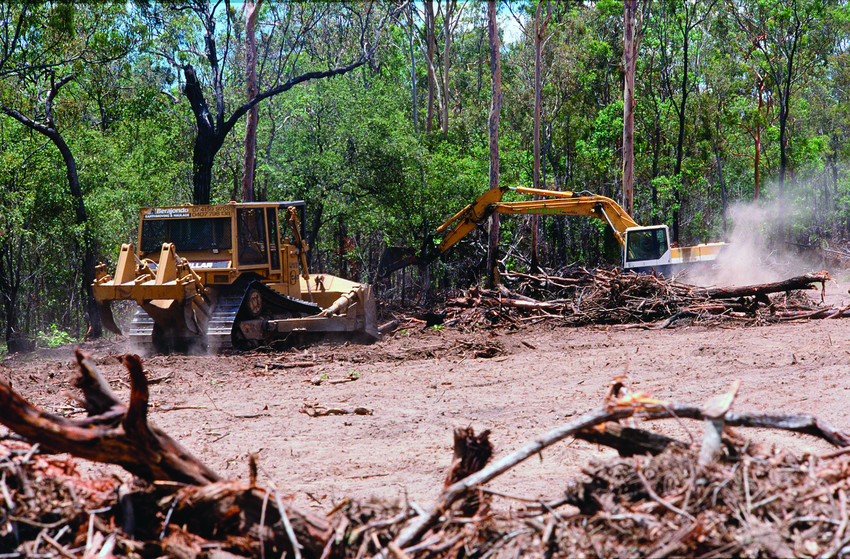

Vanishing Havens: Confronting the Threat of Habitat Destruction in Protected Areas

How importance in today’s world ??
"Vanishing Havens: Confronting the Threat of Habitat Destruction in Protected Areas" is a crucial exploration of the alarming challenges faced by protected environments worldwide. In today's world, the preservation of these vital ecosystems is more critical than ever. This insightful work sheds light on the pressing issue of habitat destruction within protected areas, offering valuable insights into the urgent need for conservation efforts. As human activities continue to encroach upon these sanctuaries, the book serves as a timely call to action, emphasizing the significance of safeguarding these natural havens for the well-being of our planet and future generations.
CLICK THE LINKS, if you want to know more!
Let's join forces to support and protect the well-being of our animal friends.